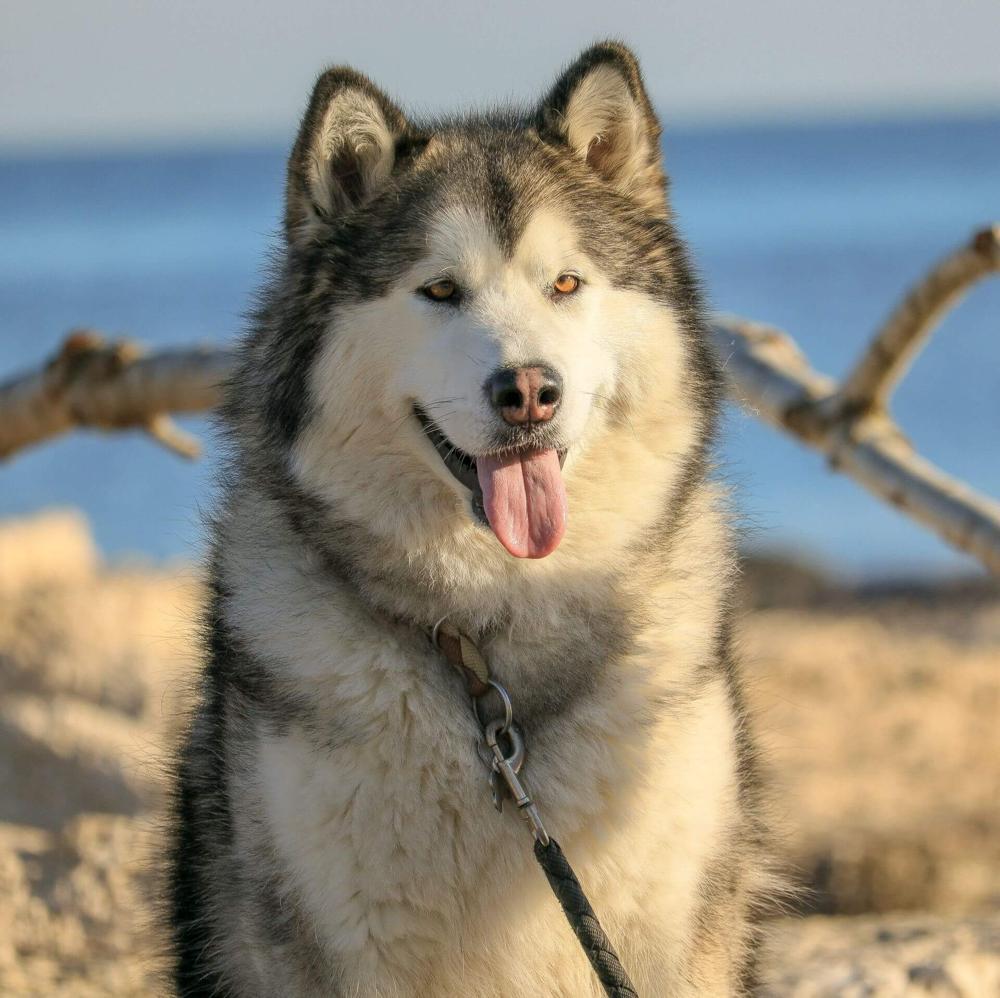
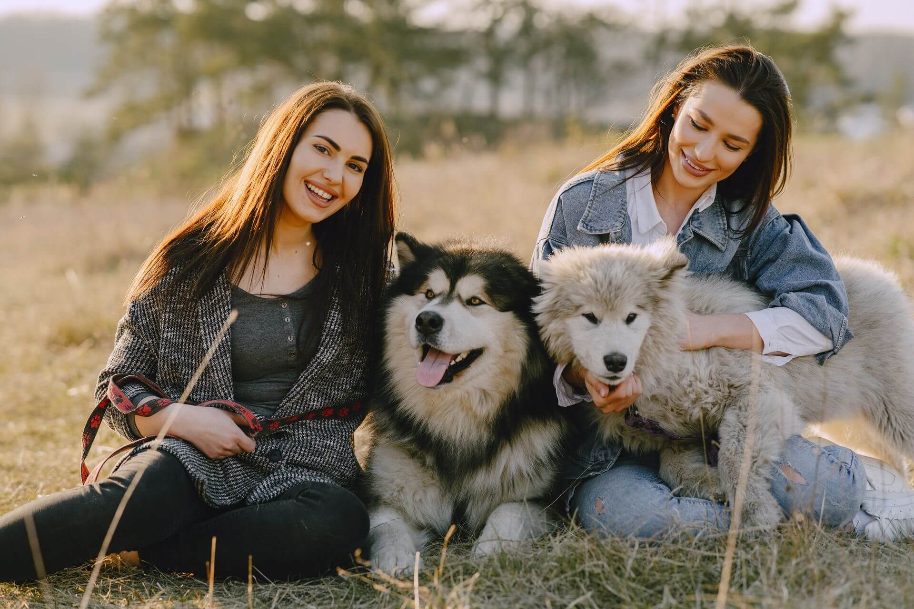
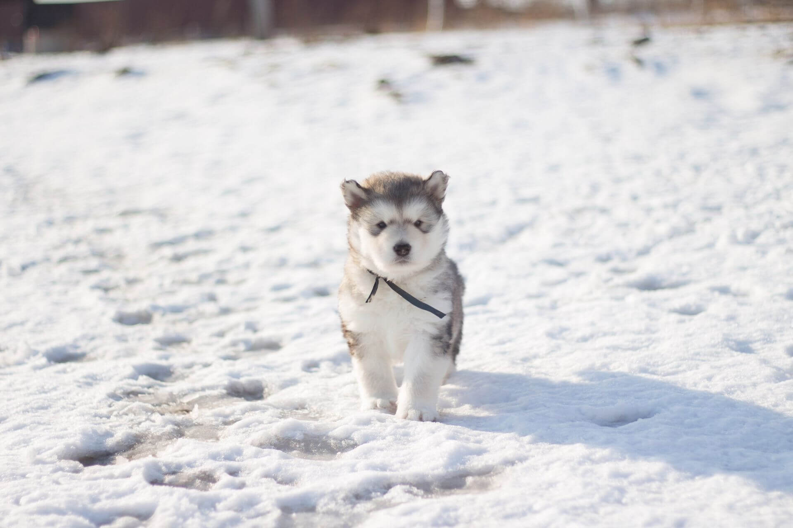
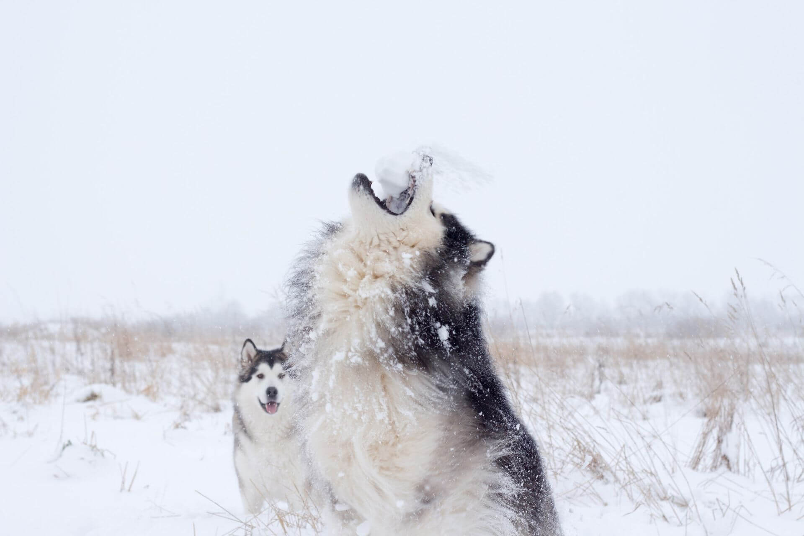

Аляскинский маламут
Крупная, мощная и при этом удивительно ласковая собака. Маламут выведен тянуть тяжёлый груз по снегу, отсюда его сила, упрямство и потребность в работе и пространстве.

- Вес
- 36–43 кг
- Рост в холке
- 63–70 см
- Жизнь
- 10–14 лет
- Энергия
- Высокая
- Линька
- Очень сильная
Характер
Аляскинский маламут — одна из древнейших ездовых пород, выведенная северным племенем малемьют для перевозки тяжёлых грузов. От этого происхождения у него мощное телосложение, выносливость и спокойная уверенность крупной рабочей собаки. Маламут искренне привязывается к своей семье, тянется к людям и тяжело переносит одиночество, поэтому ему нужен дом, где он будет частью повседневной жизни, а не оставаться надолго один.
С другими собаками маламут ладит не всегда просто. Он склонен к доминированию, особенно по отношению к животным своего пола, и эта черта тем заметнее, чем позже его начали социализировать. Если в доме уже живёт другая собака или вы планируете завести вторую, знакомить их стоит постепенно и с раннего возраста, тогда маламут вырастает терпимым и дружелюбным соседом.
Стоит знать и о других особенностях породы. Маламут умён, но независим, и слушается тогда, когда видит в этом смысл, так что дрессировка требует спокойствия и последовательности. Он обожает копать, и эту привычку важно учитывать заранее, иначе аккуратные клумбы и газон во дворе быстро превратятся в перекопанное поле, а после прогулки в дом отправится немало земли.
Есть у маламута и подкупающая черта. Он почти не лает, зато охотно «разговаривает» с хозяином, выражая свои чувства ворчанием, бурчанием и протяжным мелодичным воем. Многие владельцы считают эту особенность одной из самых обаятельных в породе.
Характеристики
Размер
Крупная и сильная собака. Кобели весят примерно от 36 до 43 килограммов при росте около 63 сантиметров в холке, суки заметно легче и ниже.
Шерсть
Густая двойная, созданная для северного холода. Дважды в год обильно линяет и требует регулярного вычёсывания.
Энергия
Высокая. Маламуту нужны долгие прогулки и нагрузка, особенно в прохладное время года.
Обучаемость
Хорошая, но только при спокойном и уверенном подходе. Своеволие в характере требует терпения.
Отношение к детям
Обычно ласков и терпелив, но из-за внушительного размера малышей с ним лучше не оставлять без присмотра.
Здоровье
Маламут крепок от природы, но как у любой крупной породы у него есть наследственные слабые места, о которых стоит знать заранее. Ответственные заводчики проверяют здоровье родителей и показывают результаты тестов, поэтому щенка лучше брать именно у них.
Дисплазия суставов
Тазобедренный сустав у крупных собак под особой нагрузкой. Риск снижают контроль веса и проверка родителей.
Заворот желудка
Опасное для жизни вздутие, к которому склонны большие глубокогрудые породы. Помогает кормление небольшими порциями и покой после еды.
Хондродисплазия
Наследственное нарушение развития костей, иногда встречающееся у породы. Выявляется генетическим тестом.
Окрасы
Маламут почти всегда сочетает основной тон с белым низом и светлыми отметинами на морде. Однотонным он не бывает, и это часть его узнаваемого облика.

По стандарту породы глаза маламута всегда карие. Голубые глаза для него не характерны и говорят о примеси других кровей.
Кому подходит
Маламут станет прекрасным спутником для активного человека или семьи, готовой проводить с собакой много времени и давать ей простор и движение. Ему хорошо там, где есть место, прохлада и совместные занятия, ради которых он и чувствует себя нужным.
Сложно с ним придётся в жарком климате, при долгом одиночестве или в ожидании лёгкой в управлении собаки. Маламут не терпит скуки и изоляции, и именно от них рождаются его побеги, вой и привычка крушить всё вокруг.
Маламут в жизни


